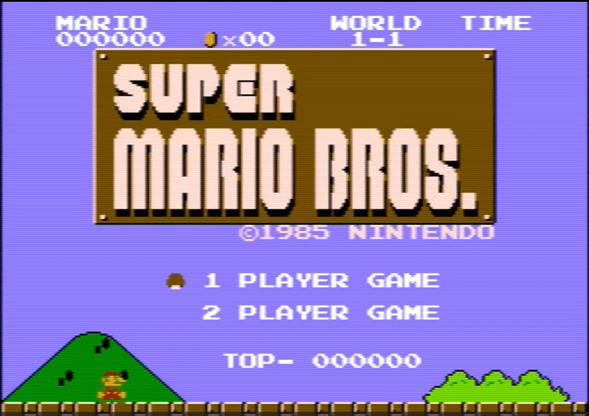
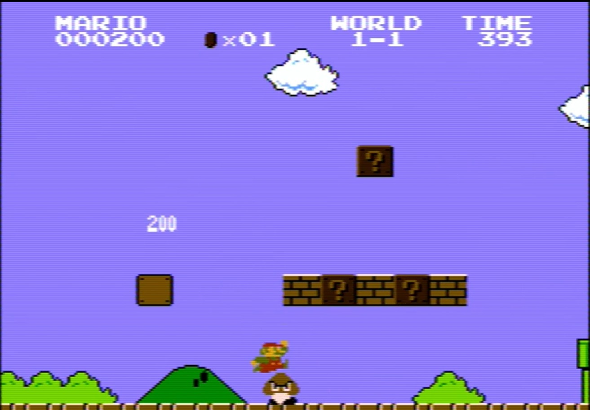
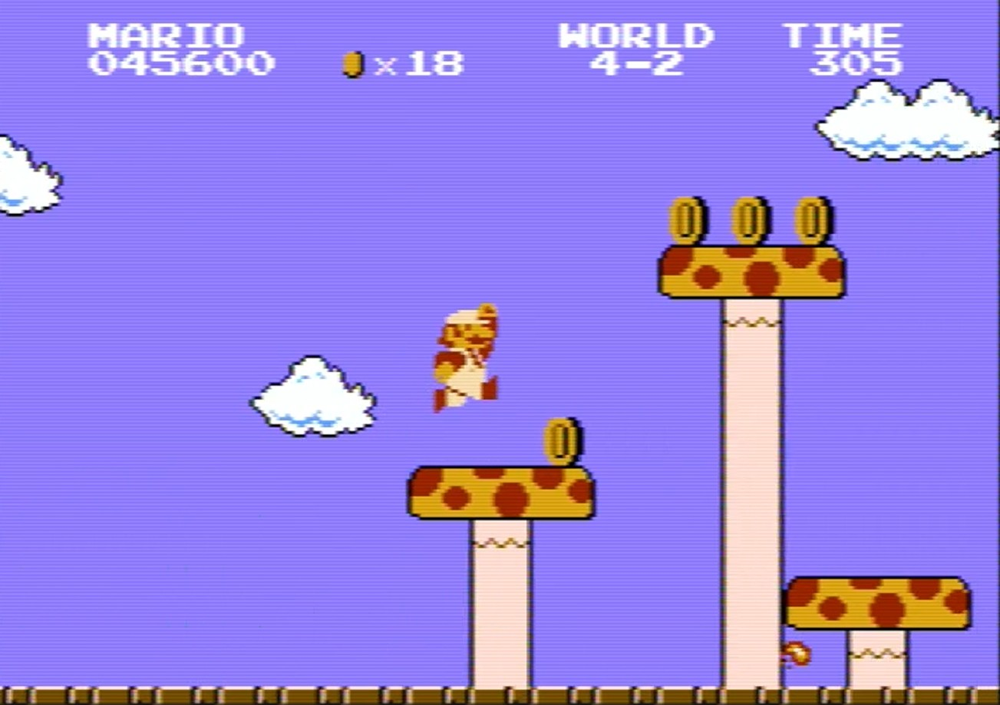
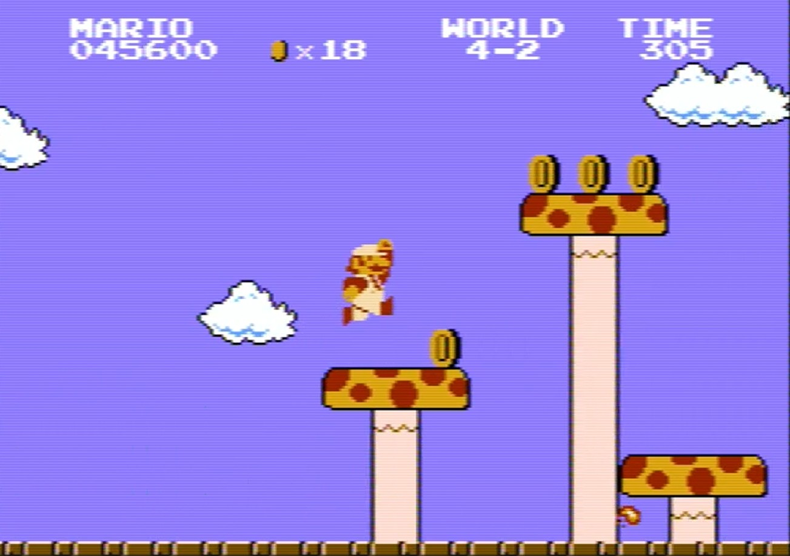
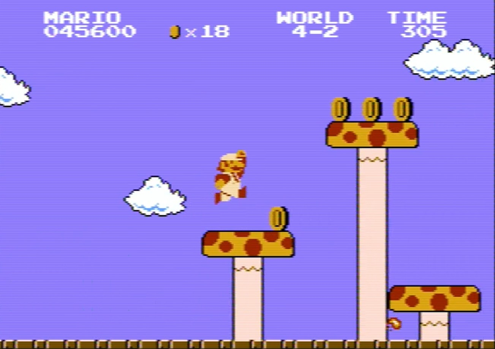

Super Mario Bros. (1985)
Developer: Nintendo
Genre: Platformer
Super Mario Bros. revolutionized the home console gaming market when it debuted in 1985. The story follows Mario, and Luigi if you have a second player, through the Mushroom Kingdom to rescue Princess Peach from Bowser. This game set a new standard for side-scrolling platformers, with tight controls, hidden secrets, iconic music, and replay value that shaped the game industry for decades.

 

